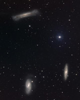
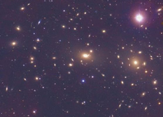

Galaxies are not generally found in isolation. Most are surrounded by a swarm of satellite galaxies and are themselves embedded in larger aggregates called groups or clusters. Galaxies that possess no nearby, luminous neighbours (though they may be accompanied by small satellites) are classified as isolated galaxies.
|
 |
 |
Many isolated elliptical galaxies are classified as fossil groups. These isolated galaxies are thought to be all that remains once all of the large galaxies in a group have merged. It is believed that the Local Group will form a fossil group when the Milky Way and Andromeda galaxies merge about 8 billion years from now.